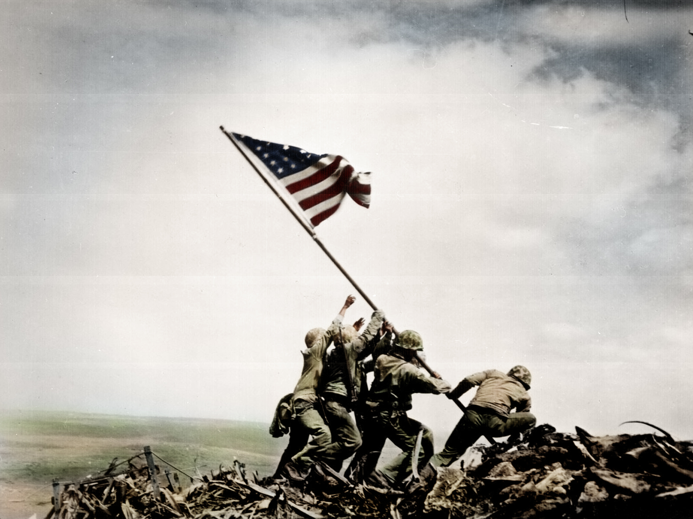

Introdução
Segunda Guerra Mundial (1939–1945) foi um conflito global envolvendo as potências do Eixo (Alemanha, Itália e Japão) e os Aliados (Reino Unido, França, URSS, EUA e outros). Seu contexto histórico está ligado a tensões políticas, econômicas e territoriais pós-Primeira Guerra Mundial (1914–1918) e ao expansionismo de regimes autoritários. Principais causas e contexto histórico: Tratado de Versalhes (1919) Impôs duras penalidades à Alemanha, incluindo perdas territoriais, desmilitarização e indenizações. Gerou ressentimento e instabilidade econômica, facilitando a ascensão do nazismo. Ascensão de regimes totalitários Alemanha (Adolf Hitler): Promoveu o expansionismo (Lebensraum) e o militarismo, violando o Tratado de Versalhes. Itália (Benito Mussolini): Buscou reconstruir um império, invadindo a Etiópia (1935) e aliando-se à Alemanha. Japão: Ocupou a Manchúria (1931) e a China (1937), buscando dominar a Ásia. Política de apaziguamento Reino Unido e França evitaram confrontos diretos com Hitler (ex.: Acordo de Munique, 1938, permitindo a anexação dos Sudetos). Expansionismo do Eixo 1939: Alemanha invadiu a Polônia (1º de setembro), levando França e Reino Unido a declararem guerra. 1940: Alemanha conquistou França, Holanda, Bélgica e iniciou a Batalha da Grã-Bretanha. 1941: Hitler invadiu a URSS (Operação Barbarossa), e o Japão atacou Pearl Harbor, trazendo os EUA para a guerra. Holocausto e crimes de guerra O regime nazista perseguiu e assassinou milhões de judeus, ciganos, eslavos e outros grupos em campos de extermínio. Fim da guerra (1945) Maio de 1945: Alemanha se rendeu após a queda de Berlim. Agosto de 1945: EUA lançaram bombas atômicas em Hiroshima e Nagasaki, levando à rendição do Japão. Consequências principais: Criação da ONU (1945) para promover a paz. Início da Guerra Fria (EUA x URSS). Reconstrução da Europa (Plano Marshall) e divisão da Alemanha. A Segunda Guerra foi o conflito mais mortal da história, com cerca de 70–85 milhões de mortos, incluindo civis e vítimas do Holocausto.
Consequências e impaco
Texto sobre a segunda guerra.
| País | Data de Independência |
|---|---|
| Brasil | 7 de setembro de 1822 |
| Argentina | 9 de julho de 1816 |
| México | 16 de setembro de 1810 |